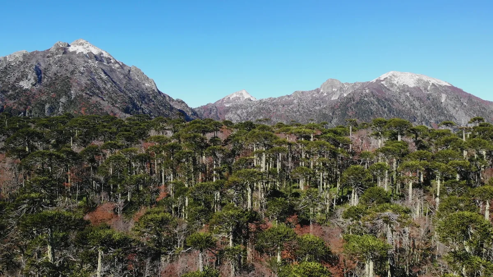

01
Parque Nacional Nahuel Huapi
Parque nacionalARS 35.000
estrangeiro, por dia

Storyblocks · licença royalty-free · SBI-357934593
Valor da entrada
Fonte: tabela de tarifas publicada no site oficial do parque (nahuelhuapi.gov.ar), consultada em 17/set/2026.
Estrangeiro paga ARS 35.000. Residente argentino paga ARS 15.000, estudante ARS 12.000 e residente da província de Río Negro, ARS 8.000. Residente local não paga.
Não pagam: aposentados e pensionistas, menores de 6 anos, pessoas com deficiência e seu acompanhante.
Há 50% de desconto no segundo dia — a tarifa acima vale para o primeiro dia de visita.
Fontes divergem na data a imprensa patagônica noticiou que esses valores passaram a valer em 1º de junho de 2026, com alta de 75% sobre os ARS 20.000 anteriores. A página oficial mostra a tabela sem informar data de vigência. Os valores são os mesmos nas duas fontes; só a data não se confirma.
Estrangeiro paga ARS 35.000. Residente argentino paga ARS 15.000, estudante ARS 12.000 e residente da província de Río Negro, ARS 8.000. Residente local não paga.
Não pagam: aposentados e pensionistas, menores de 6 anos, pessoas com deficiência e seu acompanhante.
Há 50% de desconto no segundo dia — a tarifa acima vale para o primeiro dia de visita.
Fontes divergem na data a imprensa patagônica noticiou que esses valores passaram a valer em 1º de junho de 2026, com alta de 75% sobre os ARS 20.000 anteriores. A página oficial mostra a tabela sem informar data de vigência. Os valores são os mesmos nas duas fontes; só a data não se confirma.
Onde a taxa é cobrada
Não se paga na entrada da cidade. A cobrança acontece em pontos específicos: na área de Mascardi, no caminho do Cerro Tronador; em Puerto Pañuelo, para quem embarca rumo ao Bosque de Arrayanes, Isla Victoria ou Puerto Blest; e na entrada da Península Quetrihué.
Quem fica no Circuito Chico e nos cerros próximos da cidade normalmente não passa por posto de cobrança — e é por isso que muita gente visita Bariloche sem nunca pagar a taxa.
Quem fica no Circuito Chico e nos cerros próximos da cidade normalmente não passa por posto de cobrança — e é por isso que muita gente visita Bariloche sem nunca pagar a taxa.
Onde fica